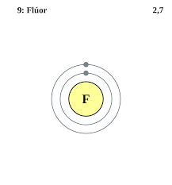
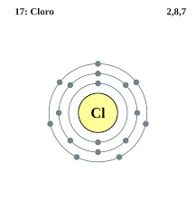
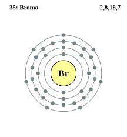
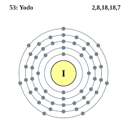
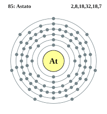
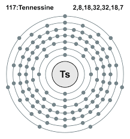

Los halógenos son un grupo en la tabla periódica que consta de seis elementos químicamente relacionados: flúor, cloro, bromo, yodo (I), astato y tennessina, aunque algunos autores excluirían la tennessina porque se desconoce su química y se espera teóricamente que sea más como la del galio.
El flúor es el elemento químico de número atómico 9 situado en el grupo de los halógenos de la tabla periódica de los elementos. Su símbolo es F. Es un gas a temperatura ambiente, de color verde pálido, formado por moléculas diatómicas F₂. Es el más electronegativo y reactivo de todos los elementos.
Número atómico: 9
Configuración electrónica: [He] 2s22p5
Masa atómica: 18,998403 u
Electronegatividad: 3,98
Punto de fusión: -219,6 °C
Descubridor: Henri Moissan
El cloro es un elemento químico de número atómico 17 situado en el grupo de los halógenos de la tabla periódica de los elementos. Su símbolo es Cl.
Masa atómica: 35,453 u
Número atómico: 17
Configuración electrónica: [Ne] 3s²3p⁵
Electronegatividad: 3,16
Radio de Van der Waals: 175 pm
Punto de ebullición: -34,04 °C
El bromo es un elemento químico de número atómico 35 situado en el grupo de los halógenos de la tabla periódica de los elementos. Su símbolo es Br. El bromo a temperatura ambiente es un líquido rojo, volátil y denso. Su reactividad es intermedia entre el cloro y el yodo.
Masa atómica: 79,904 u
Número atómico: 35
Configuración electrónica: [Ar] 4s²3d¹⁰4p⁵
Electronegatividad: 2,96
Punto de fusión: -7,2 °C
Punto de ebullición: 58,8 °C
El yodo o iodo es un elemento químico de número atómico 53 situado en el grupo de los halógenos de la tabla periódica de los elementos. Su símbolo es I. Es un no metal debido a que no es un buen conductor del calor ni de la electricidad. Este elemento puede encontrarse en forma molecular como yodo diatómico.
Masa atómica: 126,90447 u
Configuración electrónica: [Kr] 4d105s25p5
Número atómico: 53
Electronegatividad: 2,66
Radio atómico: 140 pm
Punto de fusión: 113,7 °C
El astato es un elemento químico de la tabla periódica cuyo símbolo es At y su número atómico es 85. Es radiactivo y el más pesado de los halógenos. Se produce a partir de la degradación de uranio y torio.
Configuración electrónica: [Xe] 4f¹⁴5d¹⁰6s²6p⁵
Número atómico: 85
Masa atómica: 210 u
Electronegatividad: 2,2
Radio de Van der Waals: 200 pm
Descubridor: Emilio Gino Segrè
El teneso es un elemento sintético muy pesado de la tabla periódica de los elementos cuyo símbolo es Ts y número atómico 117. También conocido como eka-astato o simplemente elemento 117, es el segundo elemento más pesado creado hasta ahora y el penúltimo del séptimo período en la tabla periódica.
Número atómico: 117
Descubrimiento: 5 de abril de 2010
Masa atómica: 294 u
Punto de ebullición: 610 °C
Descubridores: Yuri Oganesián, Instituto Central de Investigaciones Nucleares
Serie química: Halógenos, Elementos del periodo 7
